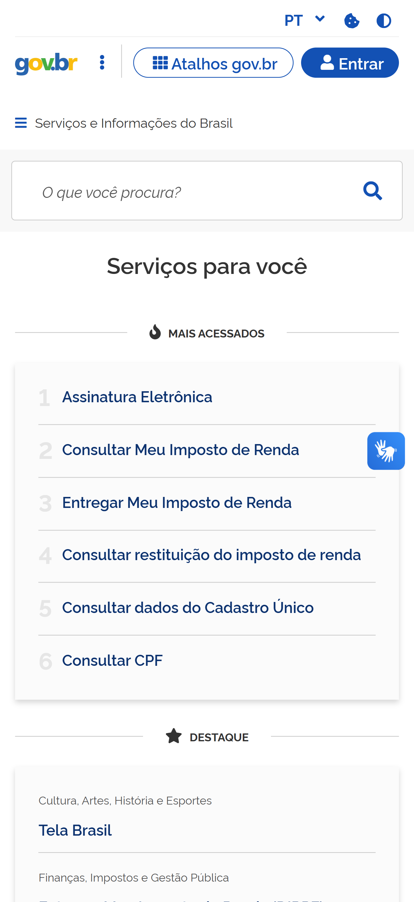

Antes de começar, tenha em mãos
- Seu número de CPF
- Sua data de nascimento
- Um celular com internet
- Um e-mail ou número de celular que você use
-
Abra o site do Gov.br
Toque no botão abaixo. Se preferir digitar, escreva gov.br na barra de endereço do navegador.
Abrir o gov.brO que você vai verA página inicial do governo federal, com o desenho da bandeira do Brasil no canto e um botão de Entrar no alto da tela.

Página inicial do gov.br -
Toque em “Entrar”
O botão fica no canto superior direito da tela. No celular, pode estar escondido atrás do ícone de três risquinhos.
O que você vai verUma tela azul escrito “Identifique-se no gov.br”, pedindo o seu CPF.

Tela de identificação -
Digite seu CPF
Digite só os números, sem ponto e sem traço. Depois toque em Continuar.
Se der errado“CPF inválido” — algum número foi digitado errado. Apague tudo e digite de novo, devagar.
Confira também se não sobrou espaço no começo ou no fim.

Preenchendo o CPF -
Confirme que é você
Aqui o sistema precisa ter certeza de que o CPF é seu mesmo. Ele oferece alguns caminhos — escolha o que for mais fácil para você:
Pelo banco — se você usa aplicativo de banco, esse é o caminho mais rápido e o que já deixa sua conta com nível mais alto.
Respondendo perguntas — o site faz perguntas sobre a sua vida (onde você trabalhou, com quem você tem parentesco).
Pelo reconhecimento facial — usando o aplicativo Gov.br e a sua CNH, você tira uma foto do rosto para comparar.
Se der erradoErrou as perguntas? Não tem problema, e não estraga nada. Volte e escolha outro caminho — o do banco costuma funcionar quando os outros falham.

Escolhendo como confirmar sua identidade -
Crie sua senha
Use uma senha longa e fácil de lembrar. Três palavras juntas com um número no meio funciona muito bem — veja a cartilha se quiser o exemplo.
Anote em um papel e guarde em lugar seguro em casa. Não é vergonha nenhuma: é a senha mais importante que você vai ter.
CuidadoEssa senha dá acesso a benefício, imposto e saúde. Nunca passe ela por WhatsApp ou telefone, nem para quem disser que é do governo.

Criando a senha -
Ative a verificação em duas etapas
Dentro da sua conta, procure por Segurança ou Verificação em duas etapas e ative.
Com isso ligado, ninguém entra na sua conta só com a senha — precisa também do seu celular. É o que impede a maioria dos golpes.

Ativando a verificação em duas etapas
✅ Pronto!
Agora você tem uma conta Gov.br. Com ela você entra no Meu SUS Digital, na Carteira de Trabalho, no INSS e na Receita Federal — sempre com esse mesmo CPF e essa mesma senha.
Não precisa criar conta nova em cada um. É sempre essa.